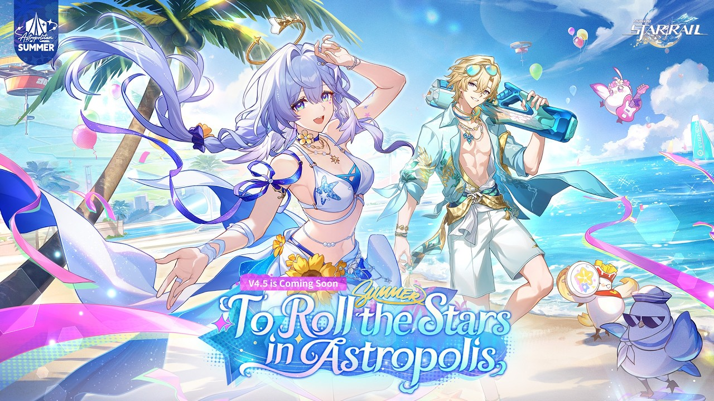

Panduan Honkai: Star Rail
Panduan lengkap Honkai: Star Rail: Warp pity, pengelolaan Skill Point, farming XP yang efisien, dan rotasi tim.

📄 Ringkasan Cepat
📜 Informasi Dasar
| Developer | HoYoverse (miHoYo) |
|---|---|
| Genre | Turn-based RPG, Space Fantasy |
| Rilis | 26 April 2023 |
| Platform | PC, iOS, Android, PS5, Xbox Series X|S |
| Model | Free-to-play dengan microtransaction |
| Website resmi | https://hsr.hoyoverse.com/id-id/ |
🎲 Sistem Warp dan Pity
Gacha Honkai Star Rail bernama Warp, dengan tiga kanal: Character Event Warp, Light Cone Event Warp, dan Stellar Warp.
Di Character Event Warp base rate 5-star adalah 0,6 persen per pull dan mulai naik sekitar pull ke-74. Di pull ke-90 kamu dijamin 5-star.
Setiap 5-star punya peluang 50 persen menjadi karakter yang dibannerkan. Kalau kalah, 5-star berikutnya dijamin karakter tersebut, sehingga worst case 180 pull.
- Hard pity karakter 90 pull, hard pity Light Cone 80 pull.
- Base rate 5-star 0,6 persen, naik tajam mulai pull ke-74.
- Character Event Warp punya 50/50, Light Cone Event Warp juga punya 50/50.
- Stellar Warp (permanent) dijamin karakter 5-star di pull ke-90, tanpa 50/50.
- Ada aturan yang membuat beberapa banner punya pity terpisah, jadi pelajari dulu jenis banner yang kamu pakai.
🌱 Stellar Jade yang Terbatas
Stellar Jade adalah mata uang Warp dan Sumber yang paling dibatasi. Ada batasunctional jumlah Stellar Jade per minggu, jadi kamu tidak bisa menumpuk tanpa batas.
Konsekuensinya,rythme pull harus disappointing Plan. Menarik semua Steer pada banner yang salah bisa membuat miss di banner yang kamu incar.
- Ada batas mingguan Stellar Jade. Periksa batasnya sebelum merencanakan pull panjang.
- Simpan Stellar Jade untuk banner karakter, bukan langsung untuk banner Light Cone.
- Prefer regular sumber yang repeatable: daily tutorial, weekly arena, daily training.
- Kalau punya HoyoLAB, klaim check-in rewards yang sering forgotten padahal gratis.
⚔ Tips Battle dan Rotasi Tim
Combat Star Rail berbasis turn dengan Skill Point. Semua aksi consuming satu Skill Point, jadi timing dan urutan skill menentukan kecepatan turn kamu.
Karena combat-nya turn-based, karakter dengan utility sering lebih valuable daripada karakter dengan damage terbesar.
- Skill Point punya batas 5 per turn. Jangan boros di skill attacker kalau tim butuh healer atau buffer.
- Bangun Tim dengan 3 peran: sumber damage utama, buffer, dan sustain.
- Debuff penting untuk manche beberapa boss. Bawa minimal satu karakter dengan debuff.
- Ultimate sering punya animation panjang. Matikan atau percepat animation di settings supaya tidak membuang waktu.
- Fokus satu tim sampai selesai content, baru pindah ke tim kedua.
⚡ Efisiensi Pengalaman
Karena Star Rail punya batas EXP per material, farming XP Smart adalah cara paling eficient untuk naik level.
Ada fitur Express Training di Outpost yang membuat proses ini jauh lebih cepat dibanding farming manual.
- Pakai Express Training Outpost untukExperience yang jauh lebih cepat.
- Material EXP Overflow jadi aset. Jangan dibuang sebelum kamu cek kebutuhan karakter yang belum naik level.
- Naikkan level uniformly sampai pipeline yang stabil, baru fokuskan sumber daya ke karakter utama.
- Daily Training di Training Room memberi material gratis setiap hari.
❌ Kesalahan yang Sering Terjadi
Pemain baru sering terjebak pola pull dan farming yang membuang sumber daya secara tidak perlu.
Sebagian besar kesalahan ini karena belum paham bahwa game ini punya sistem yang cukup ketat soal sumber daya.
- Pull tanpa rencana di banner yang salah. Selalu cek karakter mana yang dibannerkan.
- Habisin Stellar Jade di Stellar Warp padahal bukan targetnya.
- Naikkan semua karakter sampai level maksimum dengan material terbatas. Fokuskan dulu ke karakter utama.
- Lupa klaim check-in HoyoLAB dan reward daily dalam game.
- Meninggalkan dua karakter di level 1 padahal sudah jadi karakter 4-star yang bagus.
Catatan: angka pity, jadwal, dan mekanisme di halaman ini bisa berubah setelah patch. Cek pengumuman resmi bila perlu informasi paling mutakhir.